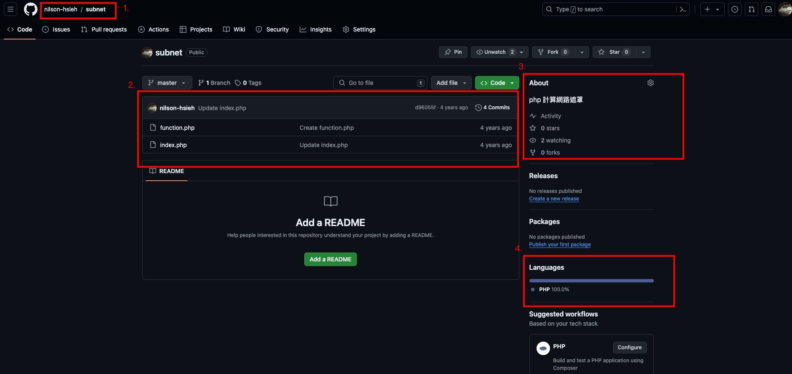
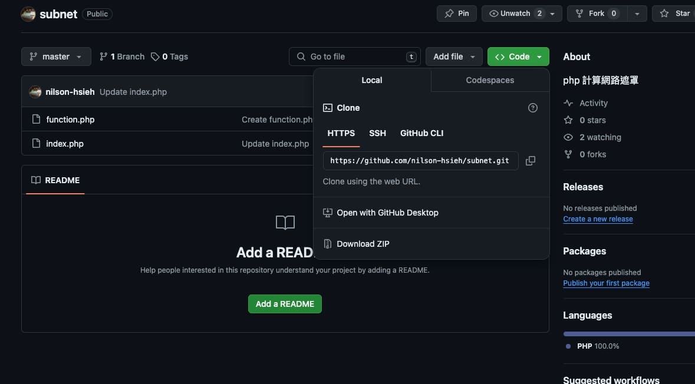

Git - Github 使用
前言
Github 是在走程式開發的路上蠻常聽到的一個平台，上篇 Git 介紹 提到 git 指令後，這篇主要是說明要如何上傳到 github 跟其他相關的語法
Github 介紹

- 這邊會顯示 擁有者 / 儲存庫名稱
- 這是主要放程式跟顯示程式的地方
- 這邊主要顯示一些這個專案的資訊，例如觀看數、追蹤數等等
- 這邊是會列出這個專案目前所撰寫的語言的比例

點擊 code 可以選擇使用 clone 還是直接下載這個專案的 zip 欓，我們今天主要是說明要如何的用 git 去操作 github ，所以我們下面的教學會使用 clone 抓取儲存庫
他可以選擇 https 或者是 ssh 連線，他所顯示的網址是這個儲存庫連線的網址，之後在本地端設定會用到
Git 語法介紹
將儲存庫下載到本地端
如果在 github 有儲存庫，想要抓到本地端，就可以用 clone 指令，遠端網址是指上面第二張圖點選 code 後 出現的最後為 .git 的那個網址
1 | $ git clone "遠端網址" |
設定遠端連線
如果 github 上儲存庫是空的，那我們可以直接設定遠端連線
1 | $ git remote add "簡稱" "遠端網址" |
簡稱可以依照個人的需求取名，但是不能重複，如果重複會覆蓋掉舊的遠端資訊
1 | $ git remote |
使用 git remote 可以查看現在所有設定的遠端資訊
上傳至 github
我們程式完成修改要上傳的時候，可以使用 push 將檔案重本地端上傳至 github
上傳前記得先確認目前在本地的版本是不是在雲端上的最新版，如果不是要先執行下一個段落的 下載 後才能上傳
1 | $ git push "簡稱" "分支名稱" |
將最新版下載
下載有分兩種
- 下載並合併
- 單純下載
如果我們要下載並合併 到本地端，我們使用下面的語法
1 | $ git pull "簡稱" "分支名稱" |
那如果單純只要下載，使用下面的語法
1 | $ git fetch "簡稱" "分支名稱" |
pull、fetch 的功能其實差不多，只是 pull 多了前一篇提到的 合併 的功能
結語
這篇主要提到 github 的一些基本用法，下篇會提到一些 github ci/cd 等等比較進階的用法